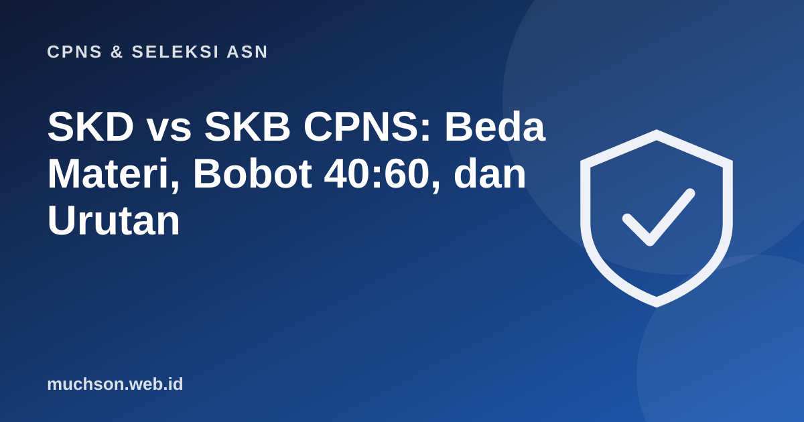

Beranda › Artikel › CPNS & Seleksi ASN
CPNS & Seleksi ASNSKD vs SKB CPNS: Beda Materi, Bobot 40:60, dan Urutan
Banyak pelamar fokus pada SKD, lalu terkejut karena nilai akhir ternyata lebih ditentukan SKB. Artikel ini membedah keduanya langsung dari teks resmi PermenPANRB 6/2024: apa yang diujikan, bagaimana peringkat menentukan siapa yang boleh ikut SKB, dan bagaimana bobot 40:60 menyusun nilai akhir.

Tiga tahap seleksi CPNS menurut aturan resmi
Seleksi pengadaan PNS terdiri atas tiga tahap: seleksi administrasi, Seleksi Kompetensi Dasar (SKD), dan Seleksi Kompetensi Bidang (SKB). Urutan ini tertulis di Pasal 26 PermenPANRB 6/2024, aturan yang berlaku sejak 23 Juli 2024 dan mencabut Permen 27/2021. Tiap tahap adalah gerbang: gagal di satu tahap berarti tidak lanjut ke tahap berikutnya.
Deskripsi teks diagram
- Seleksi administrasi: dokumen dicocokkan dengan syarat
- SKD: TWK, TIU, TKP di CAT BKN
- SKB: kompetensi bidang sesuai jabatan
- Integrasi nilai: SKD 40% + SKB 60%
- Pengumuman: peringkat akhir per formasi
| Tahap | Yang dinilai | Sistem | Dasar |
|---|---|---|---|
| Seleksi administrasi | Kecocokan dokumen pelamaran dengan persyaratan administrasi dan kualifikasi | Diperiksa panitia instansi, hasil diumumkan terbuka | Pasal 28 |
| SKD | Kesesuaian kompetensi dengan standar kompetensi dasar PNS | CAT BKN | Pasal 30 |
| SKB | Kesesuaian kompetensi bidang dengan kebutuhan jabatan | CAT BKN, ditambah tes lain pada kondisi tertentu | Pasal 32 sampai 36 |
Per 17 November 2026, akun SSCASN untuk seleksi CPNS 2026 sudah dibuka, tetapi jadwal pendaftaran formasi, SKD, dan SKB belum diumumkan resmi. Pantau sscasn.bkn.go.id dan kanal resmi BKN. Aturan yang dijelaskan di sini adalah PermenPANRB 6/2024 yang masih berlaku.
SKD: tiga subtes, 110 soal, 100 menit
SKD menguji kompetensi dasar yang sama untuk semua jabatan. Rincian format di bawah ini tertulis dalam Keputusan Menteri PANRB Nomor 406 Tahun 2026 (untuk sekolah kedinasan). Strukturnya, yaitu 110 soal dalam 100 menit dengan komposisi TWK, TIU, dan TKP, sama dengan SKD CPNS yang selama ini dikenal.
| Subtes | Jumlah soal | Cara menilai | Nilai maksimal | Yang diujikan |
|---|---|---|---|---|
| TWK (Tes Wawasan Kebangsaan) | 30 | Benar 5, salah atau kosong 0 | 150 | Nasionalisme, integritas, bela negara, pilar negara (Pancasila, UUD 1945, NKRI, Bhinneka Tunggal Ika), bahasa negara |
| TIU (Tes Intelegensia Umum) | 35 | Benar 5, salah atau kosong 0 | 175 | Verbal (analogi, silogisme, analitis), numerik (berhitung, deret, perbandingan kuantitatif, soal cerita), figural (analogi, ketidaksamaan, serial) |
| TKP (Tes Karakteristik Pribadi) | 45 | Tiap opsi bernilai 1 sampai 5, tidak menjawab 0 | 225 | Pelayanan publik, jejaring kerja, sosial budaya, teknologi informasi dan komunikasi, profesionalisme, anti radikalisme |
Nilai kumulatif tertinggi SKD adalah 550 (150 + 175 + 225). Karena TKP tidak punya jawaban salah, hampir semua peserta mendapat poin di sana, tetapi selisih satu atau dua poin per soal bisa menentukan peringkat.
Ambang batas SKD: kenapa nilai total tinggi belum tentu cukup
Nilai ambang batas adalah nilai minimal yang harus dipenuhi setiap peserta pada setiap subtes, bukan pada nilai total. Besarnya ditetapkan lewat keputusan menteri (Pasal 43). Untuk formasi umum CPNS, rujukan terakhir yang tercatat adalah KepmenPANRB 321/2024: TWK 65, TIU 80, dan TKP 166. Per 17 November 2026 saya belum menemukan keputusan baru khusus CPNS 2026, jadi angka ini perlu dicek ulang saat pengumuman resmi terbit.
Deskripsi teks diagram
- TWK maksimal: 150 poin
- TWK ambang batas: 65 poin
- TIU maksimal: 175 poin
- TIU ambang batas: 80 poin
- TKP maksimal: 225 poin
- TKP ambang batas: 166 poin
Jangan tertukar dengan sekolah kedinasan. KepmenPANRB 406/2026 (27 Juli 2026) menetapkan ambang batas sekolah kedinasan TWK 65, TIU 80, dan TKP 156. Untuk peserta dari daerah afirmasi tertentu, syaratnya nilai kumulatif minimal 281 dan TIU minimal 55. Itu aturan seleksi sekolah kedinasan, bukan CPNS.
Lulus ambang batas belum tentu lanjut ke SKB
Ini bagian yang paling sering terlewat. Pengumuman hasil SKD ditentukan paling banyak 3 kali jumlah kebutuhan jabatan, berdasarkan peringkat tertinggi dari peserta yang memenuhi ambang batas (Pasal 31 ayat 5). Jadi ada dua syarat sekaligus: memenuhi ambang batas dan berada dalam peringkat teratas.
Bagaimana kalau nilai sama di batas peringkat? Pasal 31 ayat 6 mengatur urutan penentu: nilai TKP dulu, lalu TIU, lalu TWK. Jika semuanya masih sama dan berada di batas 3 kali kebutuhan, semua pelamar yang sama itu tetap diikutkan SKB (ayat 7).
Deskripsi teks diagram
- Nilai tiap subtes: harus mencapai ambang batas
- Urutkan: dari nilai SKD tertinggi
- Potong di 3 kali formasi: misal formasi 3, maka 9 besar
- Nilai sama di batas?: bandingkan TKP, lalu TIU, lalu TWK
- Masih sama?: semuanya ikut SKB
SKB: dari kebutuhan jabatan, bukan soal umum
SKB dilakukan untuk menilai kesesuaian kompetensi bidang pelamar dengan standar kompetensi bidang sesuai kebutuhan jabatan (Pasal 32). Hanya pelamar yang lulus SKD yang mengikutinya, dan dasarnya tetap CAT BKN. Soal SKB berbeda menurut jenis jabatan:
- Jabatan Fungsional: materi disusun oleh instansi pembina jabatan fungsional dan dimasukkan ke bank soal CAT BKN (Pasal 33 ayat 1).
- Jabatan Pelaksana: materi disusun oleh instansi teknis, atau memakai soal SKB yang sesuai atau serumpun dengan jabatan fungsional terkait (Pasal 33 ayat 2).
Selain CAT BKN, instansi dapat menambah tes lain. Batasnya diatur ketat supaya CAT tetap menjadi nilai utama:
| Instansi | Tes tambahan | Bobot tes tambahan | Syarat lain |
|---|---|---|---|
| Instansi Pusat | Paling banyak 3 jenis tes lain per jabatan, setelah persetujuan Menteri | Maksimal 50% dari nilai SKB (kumulatif) | Jika ada wawancara di luar CAT, bobotnya maksimal 10% dari nilai SKB (Pasal 35) |
| Instansi Daerah | Paling banyak 1 jenis tes lain, hanya untuk jabatan sangat teknis atau berkeahlian khusus | Maksimal 40% dari nilai SKB; CAT BKN minimal 60% | Tes tambahan tidak boleh berupa wawancara (Pasal 36) |
Nilai akhir: bobot SKD 40% dan SKB 60%
Nilai akhir pengadaan PNS adalah hasil integrasi nilai SKD dan SKB dengan komposisi SKD 40% dan SKB 60% (Pasal 45 ayat 3). Pengolahannya dilakukan oleh ketua Panselnas. Artinya SKD adalah gerbang penentu siapa yang boleh bersaing, sedangkan SKB yang paling besar menentukan urutan akhir.
Deskripsi teks diagram
SKD (bobot 40%)
- Gerbang masuk: harus lolos ambang batas
- Diberi peringkat 3 kali kebutuhan jabatan
- Materi sama untuk semua jabatan
- TWK, TIU, TKP, 110 soal, 100 menit
SKB (bobot 60%)
- Penentu terbesar nilai akhir
- Materi sesuai jabatan yang dilamar
- CAT BKN, dengan tes tambahan terbatas
- Peserta jauh lebih sedikit, persaingan lebih ketat
Jika nilai akhir sama, Pasal 45 ayat 4 menentukan urutan: pertama nilai kumulatif SKD yang tertinggi; kedua nilai TKP, lalu TIU, lalu TWK; ketiga indeks prestasi kumulatif tertinggi untuk lulusan diploma, sarjana, dan magister (untuk lulusan SMA, nilai rata-rata tertinggi).
Cara belajar yang mengikuti bobot ini
- Kejar ambang batas TKP lebih dulu. TKP butuh 166 dari 225 pada aturan terakhir, dan inilah yang paling sering menggugurkan peserta bernilai total tinggi.
- Jangan berhenti di ambang batas. Karena ada pemotongan 3 kali formasi, skor SKD yang jauh di atas ambang batas memberi rasa aman, terutama pada formasi peminat banyak.
- Cari kisi-kisi SKB jabatan Anda. Materi SKB bergantung jabatan, jadi bacalah pengumuman formasi dan standar kompetensi jabatan.
- Latih ritme 100 menit. Hanya sekitar 55 detik per soal. Latihan dengan timer membantu menentukan kapan melewati soal sulit.
Latihan SKD yang meniru format CAT (110 soal, 100 menit, skor per subtes dan pengecekan ambang batas) bisa dicoba gratis di paket tryout SKD pertama di LolosSeleksi. Setelah selesai Anda mendapat rapor PDF yang menunjukkan subtes mana yang masih di bawah ambang batas.
Kesalahan yang sering terjadi
Tanya jawab
Apa bedanya SKD dan SKB pada seleksi CPNS?
Berapa bobot SKD dan SKB dalam nilai akhir?
Apakah passing grade CPNS 2026 sudah berubah?
Jika lulus ambang batas SKD, apakah pasti ikut SKB?
Apakah SKB selalu memakai CAT?
Bagaimana jika nilai akhir dua peserta sama?
Referensi
- Peraturan Menteri PANRB Nomor 6 Tahun 2024 tentang Pengadaan Pegawai ASN (teks resmi, BKN) (membuka tab baru)
- Peraturan Menteri PANRB 6/2024, status berlaku dan mencabut Permen 27/2021 (peraturan.bpk.go.id) (membuka tab baru)
- Keputusan Menteri PANRB Nomor 406 Tahun 2026 tentang Nilai Ambang Batas SKD Sekolah Kedinasan (JDIH KemenPANRB, 27 Juli 2026) (membuka tab baru)
- Rangkuman nilai ambang batas SKD CPNS 2024 (KepmenPANRB 321/2024), Okezone (membuka tab baru)
- Kompas.com, 16 November 2026: registrasi akun SSCASN CPNS 2026 dibuka, jadwal pendaftaran belum diumumkan (membuka tab baru)